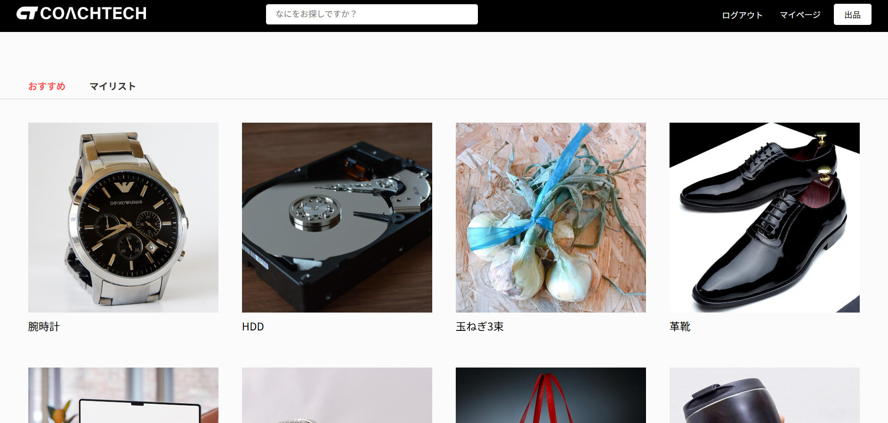
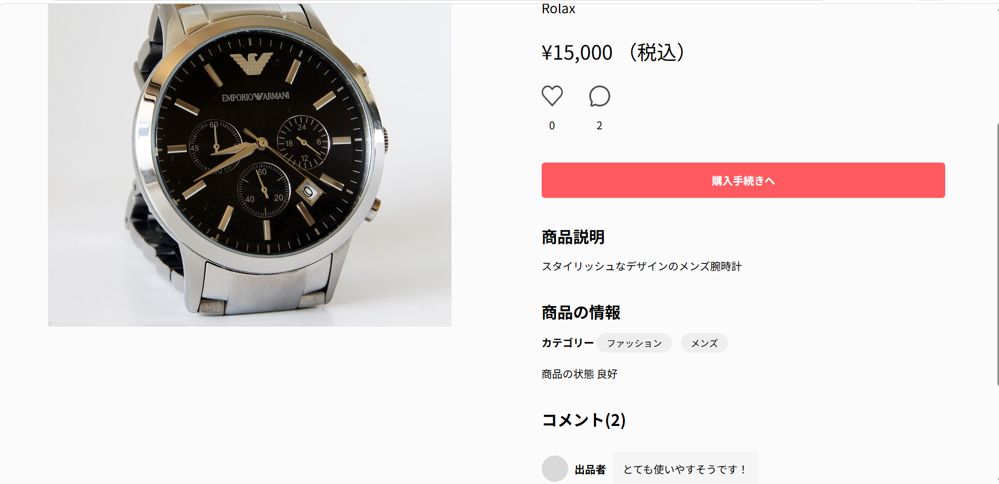
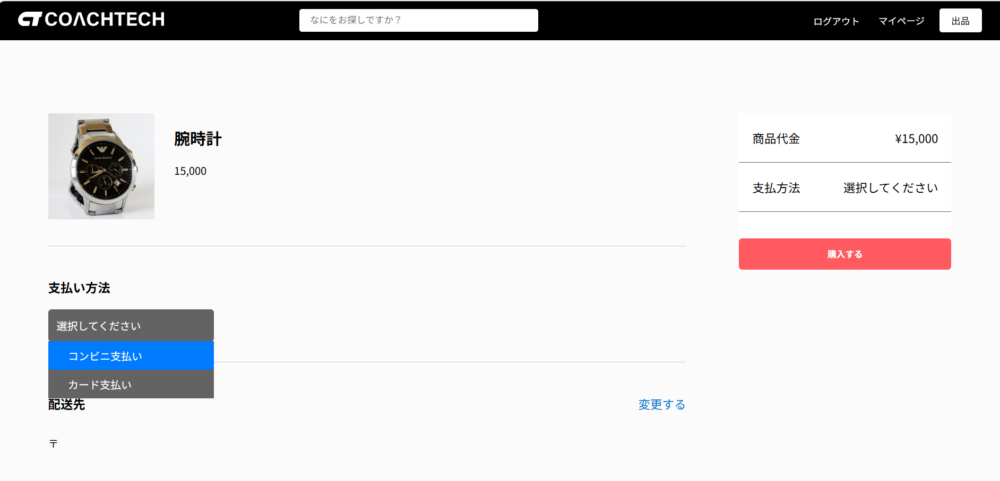
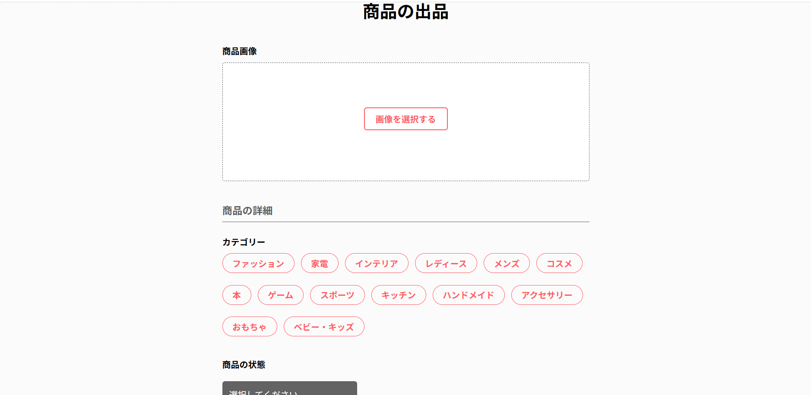
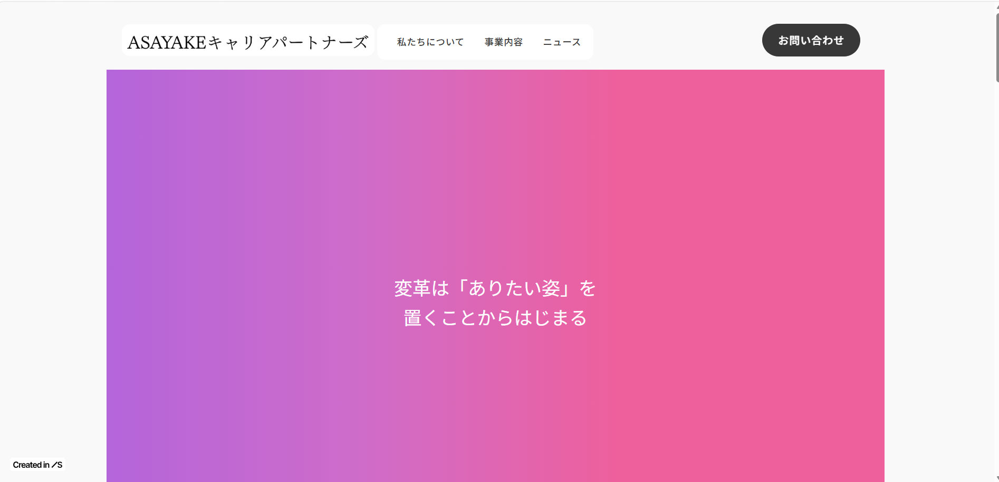
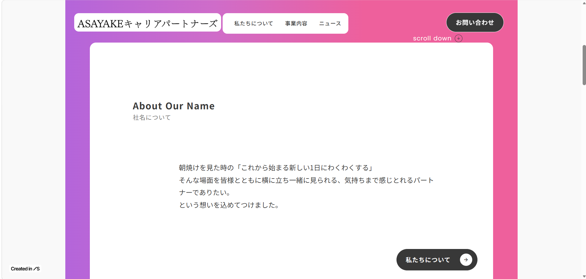
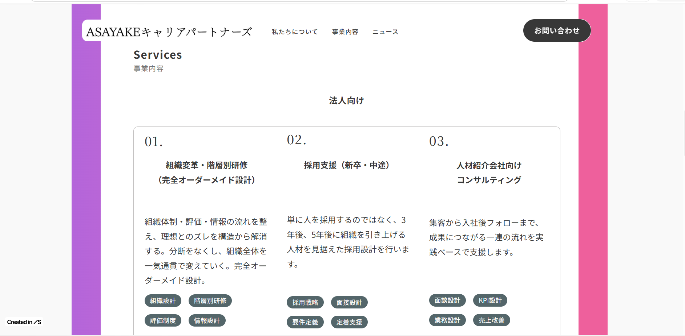
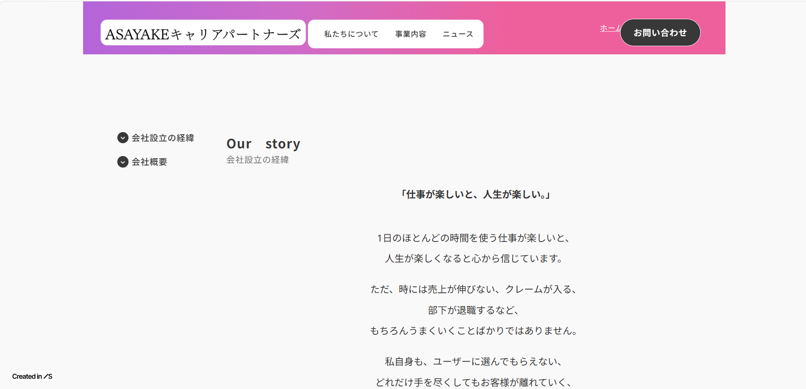

人の話を聞き、課題を形にする。
こんにちは、フジです。
営業や請求業務、人材育成、医師やケアマネジャーとの連携、ご家族への説明など、 さまざまな立場の方と関わる中で感じたのは、 「課題の多くは人との対話の中にある」ということです。
私はどちらかというと、自分が話すよりも相手の話を聞く方が好きです。
困っていることは何か。
本当に必要としていることは何か。
そんなことを一緒に整理しながら、 できる限り良い方法を探していく仕事にやりがいを感じてきました。
現在はLaravelを中心にWeb開発を学んでいます。
プログラミングはまだ学習中ですが、 これまで現場で感じてきた 「こんな仕組みがあれば助かるのに」 を形にできるエンジニアになりたいと思っています。
医療・介護・福祉の分野はもちろん、 子どもたちが夢中になれる生き物探しや地域探検のアプリ、 スポーツに関わるサービスづくりにも興味があります。
人の役に立つこと。
誰かの「ちょっと困った」を解決すること。
そんなサービスを関西から生み出していくことが、今の目標です。
Laravelを使用して開発したフリマアプリです。




使用技術：PHP / Laravel / MySQL / Docker / Fortify / Stripe / PHPUnit
GitHub： flea_market_app
キャリア支援事業のコーポレートサイトを制作しました。




URL： ASAYAKEキャリアパートナーズ
現場の声に耳を傾けながら、 誰かの「困った」や「こうなったらいいな」を形にできるサービスを作りたいと考えています。
医療・介護・福祉の分野はもちろん、 生き物探しや地域探検、 スポーツなど人が夢中になれる体験を支えるサービスづくりにも挑戦していきたいです。